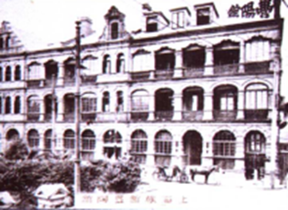
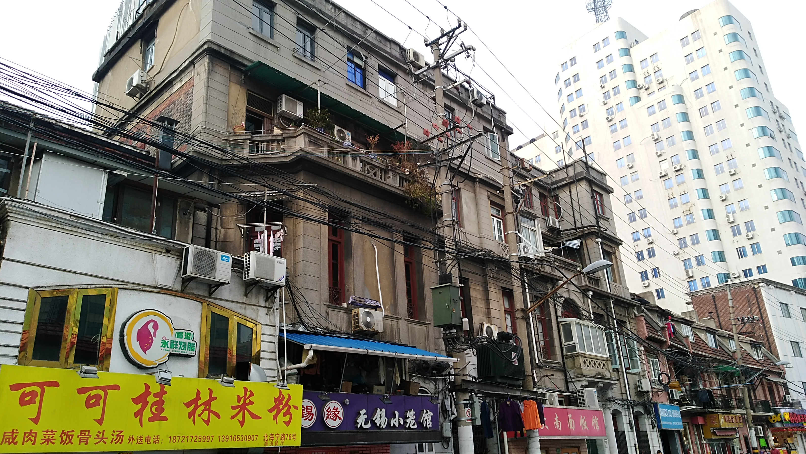

该旅馆是1894年创立的老字号旅馆。开办初期设立在栈桥附近的熙华德路（今长治路），而后随着旅馆规格扩大搬迁至北海宁路64号。

（丰阳旅馆初期）
如今该处仅剩赤练瓦的三层建筑，居住有部分空军等军队的高龄家属。据军人家属所说，该处曾居住有空军部队。该建筑目前房产权不明，房租费低廉。此外，该建筑正面临着腐朽老化问题，甚至出现过因被脱落铁皮砸中而丧生的情况。房产权不明，申请整改条件不充分，住户处于在危险之中。然而，如果整改条件充分，住户又面临着房租费上涨、生活成本陡增的问题。

(现在的丰阳旅馆外部)